Kachel: bestanden, Kern 2 Hoffnung auf ewiges Leben sowie Gnaden- und Friedenswunsch werden nicht ausdrücklich erwähnt.
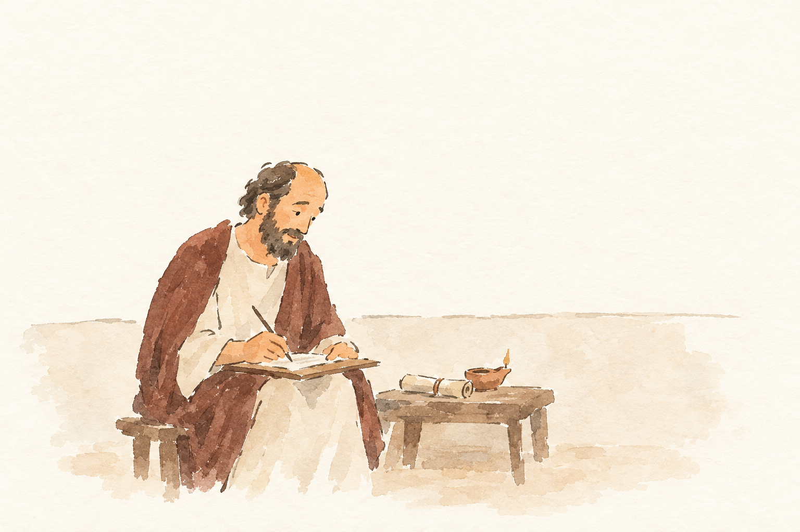
TIT-001-A1__r1v1.png ✔ gewählt: bestanden, 3 Punkte, Kern 1 Titus als Empfänger und der Inhalt des Grußes fehlen; Paulus ist nicht eindeutig erkennbar.
Blind: A seated man writes on a sheet resting on his lap. A rolled scroll and a lit lamp sit on the table beside him. – Possibly Paul writing a letter, but there are no visible details that identify the man or a particular Bible story or moment.
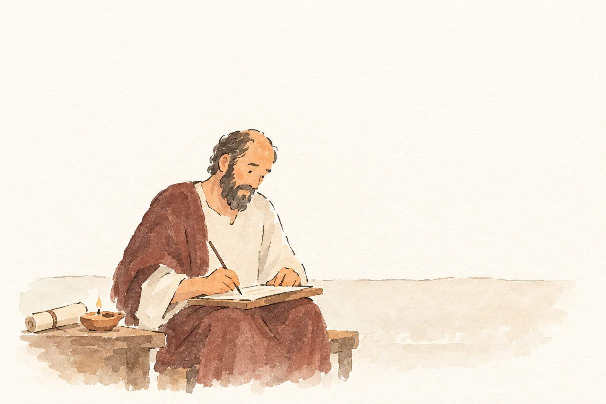
TIT-001-A1__r1v2.png: bestanden, 3 Punkte, Kern 1 Paulus ist nicht eindeutig erkennbar; Titus als Empfänger sowie Hoffnung, Gnade und Friede fehlen.
Blind: The man sits bent over a page, writing with a slender implement. A lit lamp and a rolled scroll sit beside him. – Possibly Paul writing a letter, but no visible detail identifies the man or a specific Bible story or moment.
Kachel: bestanden, Kern 2 Hoffnung auf ewiges Leben sowie Gnaden- und Friedenswunsch werden nicht ausdrücklich erwähnt.
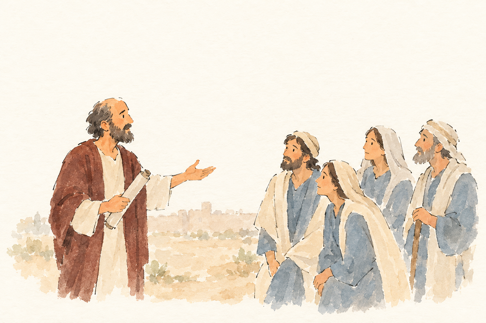
TIT-001-A2__r1v1.png ✔ gewählt: bestanden, 3 Punkte, Kern 1 Die Verkündigung passt, aber Paulus und die göttliche Verheißung des ewigen Lebens sind nicht erkennbar.
Blind: A man holding a scroll gestures toward a group of four people. The group faces him as if listening. – The scroll and clothing could suggest a biblical teacher addressing listeners, but the specific story and moment cannot be identified from the picture alone.
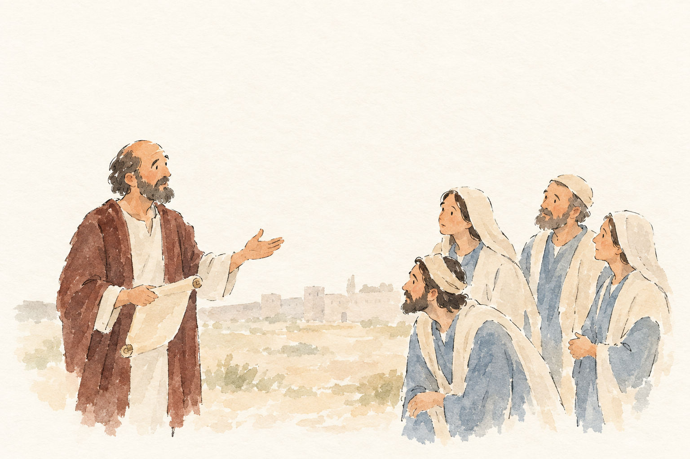
TIT-001-A2__r1v2.png: bestanden, 3 Punkte, Kern 1 Paulus und der Inhalt seiner Verkündigung – Gottes Verheißung des ewigen Lebens und sein Auftrag – sind nicht erkennbar.
Blind: A standing man holds a scroll and gestures toward a group of four people. They face him as though listening. – The scene could depict a biblical teacher or prophet addressing people, but there are not enough distinctive details to identify a particular story or moment.

Kachel: bestanden, Kern 1 Der Prediger wird nicht als Paulus erkannt; Gottes Verheißung vor ewigen Zeiten und sein Auftrag an Paulus bleiben unklar.
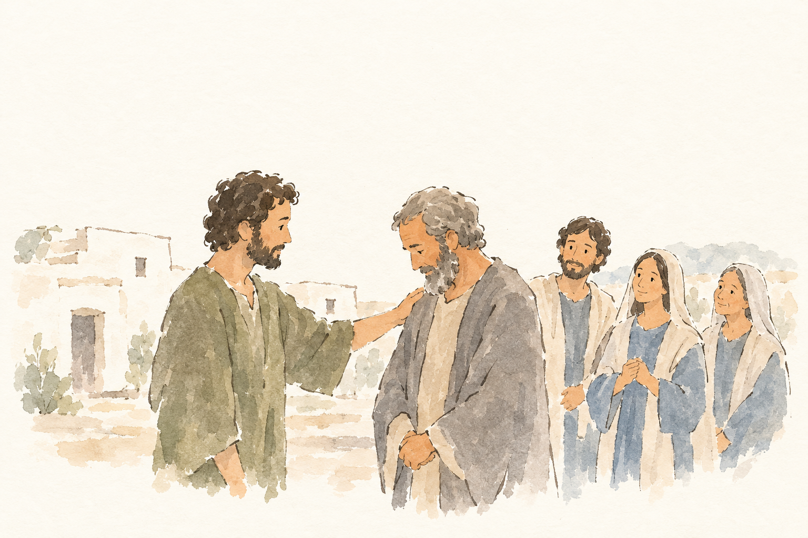
TIT-001-E1__r1v1.png ✔ gewählt: bestanden, 5 Punkte, Kern 1 Paulus und Titus sind nicht eindeutig erkennbar; Titus’ Auftrag, auf Kreta die Gemeinden zu ordnen und Älteste einzusetzen, bleibt unklar.
Blind: A man in green rests a hand on the shoulder of an older man, who bows his head and clasps his hands. Three people stand behind them and watch. – Possibly Jesus comforting a distressed man, but there are not enough distinctive details to identify a particular Bible story or moment.
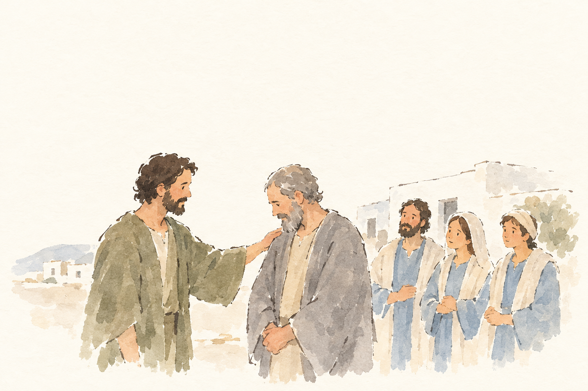
TIT-001-E1__r1v2.png: bestanden, 4 Punkte, Kern 1 Paulus und Titus werden nicht erkannt; weder der Auftrag auf Kreta noch die Einsetzung von Ältesten wird eindeutig dargestellt.
Blind: A man rests his hand on the shoulder of an older man, who bows his head and clasps his hands. Three other people stand behind them and watch. – The clothing and gesture could suggest a biblical scene, perhaps Jesus comforting someone, but the image does not identify a particular story or moment.
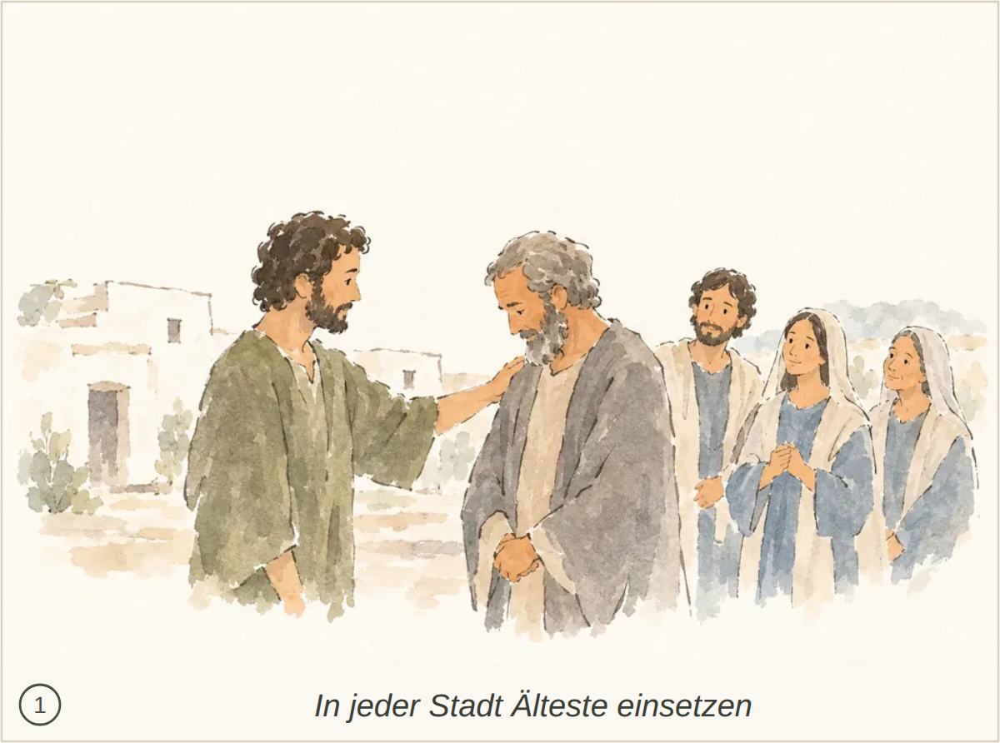
Kachel: bestanden, Kern 1 Paulus’ Zurücklassen des Titus auf Kreta und dessen Auftrag, die übrigen Angelegenheiten zu ordnen, werden nicht dargestellt.
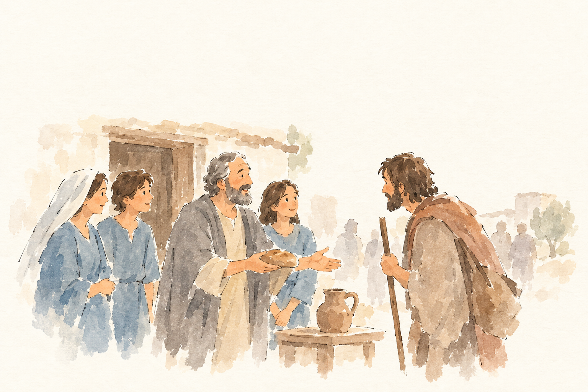
TIT-001-E2__r1v1.png ✔ gewählt: bestanden, 4 Punkte, Kern 1 Die Gastfreundschaft ist erkennbar, aber die Rolle als Ältester sowie die familiären Beziehungen und übrigen Eigenschaften sind nicht eindeutig dargestellt.
Blind: An older man offers bread and gestures toward a traveler carrying a staff. Three people beside the older man watch the encounter, while faint figures stand in the background. – Possibly a biblical scene of hospitality to a traveler, but no visible detail securely identifies a particular story or moment.
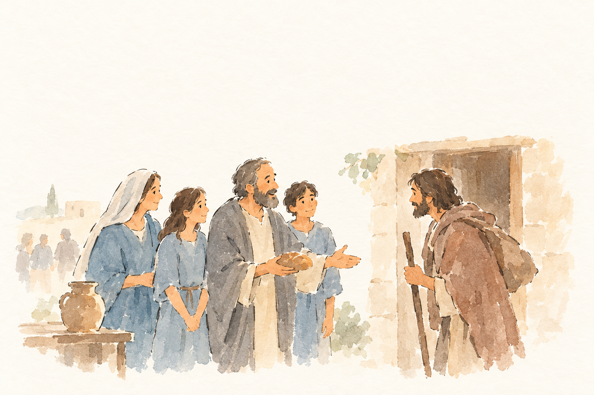
TIT-001-E2__r1v2.png: bestanden, 3 Punkte, Kern 1 Die Gastfreundschaft und die Familie sind erkennbar, aber das Amt des Ältesten und die übrigen geforderten Eigenschaften sind nicht eindeutig dargestellt.
Blind: An older man holds out bread and gestures toward a traveler carrying a staff and a bundle. A woman and two younger people stand nearby, watching. – Possibly an illustration of welcoming and feeding a stranger, as in Matthew 25:35. The picture does not establish a specific Bible story or moment with certainty.

Kachel: bestanden, Kern 1 Die Gastfreundschaft ist erkennbar, aber die Familienbeziehungen und die übrigen Eigenschaften des Ältesten bleiben unklar.
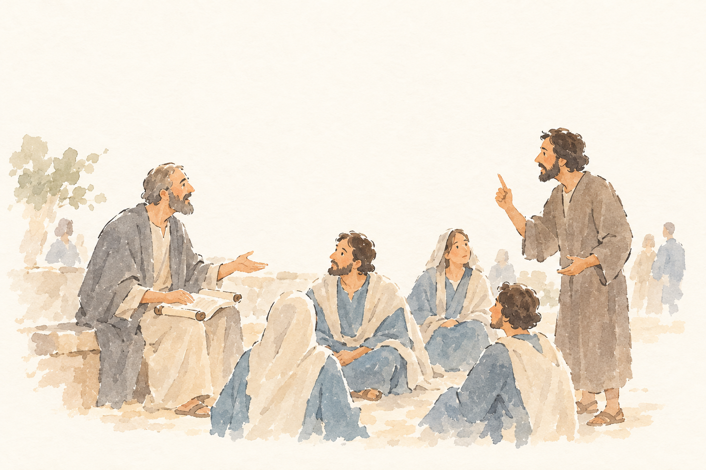
TIT-001-E3__r1v1.png: unklar, 5 Punkte, Kern 1 Der Älteste und die Schriftrolle sind erkennbar, aber die Zurechtweisung eines Widersprechenden und der Bezug zur gesunden Lehre bleiben unklar.
Blind: A standing man raises a finger as if addressing a seated group. An older seated man gestures toward the group with a scroll on his lap, while the others listen or watch. – Possibly a biblical teaching scene, perhaps Jesus addressing listeners, but the image does not establish a particular story or exact moment.
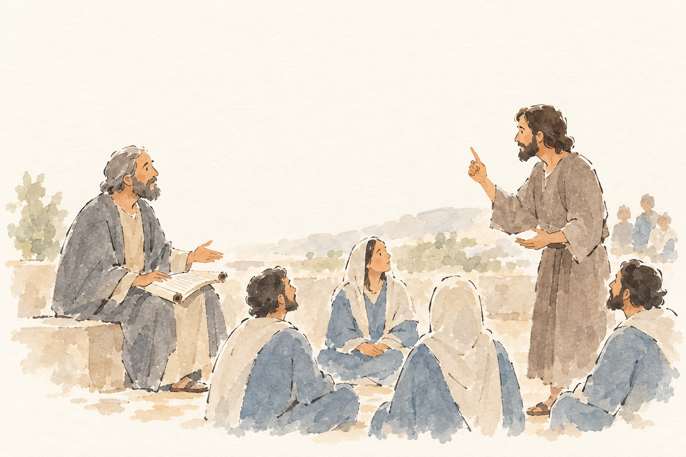
TIT-001-E3__r1v2.png: unklar, 5 Punkte, Kern 1 Der Älteste mit der Schriftrolle ist erkennbar, aber Ermahnung und Zurechtweisung von Widersprechenden bleiben unklar.
Blind: A standing man gestures with a raised finger toward an older seated man holding an open scroll. Several people sit around them, while three small figures are visible farther back. – Possibly Jesus teaching or speaking with listeners, but the image does not establish a specific Bible story or exact moment.
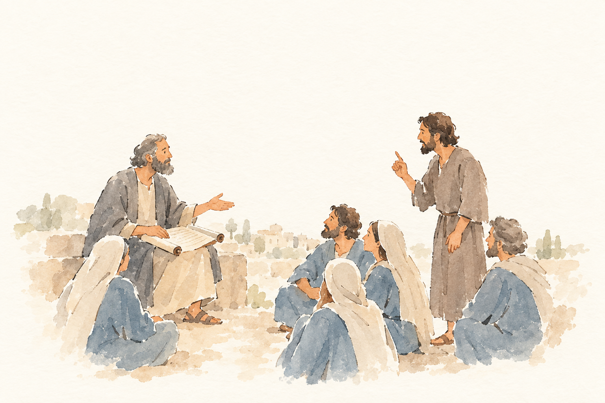
TIT-001-E3__r2v1.png ✔ gewählt: bestanden, 4 Punkte, Kern 1 Die Belehrung anhand des zuverlässigen Wortes und die Zurechtweisung eines Widersprechenden bleiben unklar.
Blind: A seated older man holds an open scroll and gestures toward a standing man, who raises a finger as if speaking. Several seated people watch them. – Possibly a biblical teaching or discussion, but no specific story or moment can be identified reliably from the image alone.
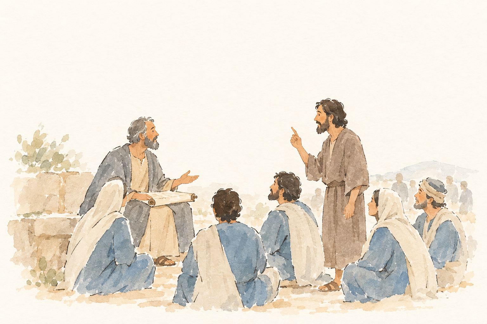
TIT-001-E3__r2v2.png: durchgefallen, 4 Punkte, Kern 1 Der Älteste mit der Schriftrolle ist erkennbar, aber Ermahnung und Zurechtweisung eines Widersprechenden bleiben unklar.
Blind: A standing man gestures with a raised finger toward an older seated man, who holds a scroll and responds with an open hand. Several people sit around them, while faint figures stand in the distance. – The image could depict a biblical teaching or discussion, but the visible details do not identify a particular story or moment reliably.

Kachel: bestanden, Kern 1 Der Älteste mit der Schriftrolle ist erkennbar, aber Ermahnung und Zurechtweisung eines Widersprechenden bleiben unklar.
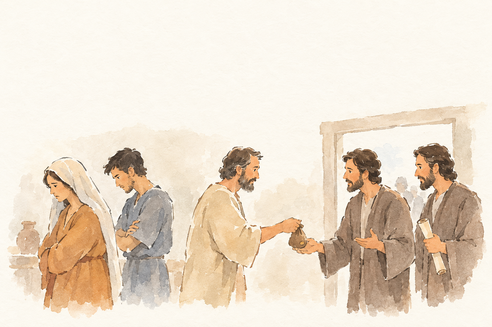
TIT-001-V1__r1v1.png ✔ gewählt: bestanden, 3 Punkte, Kern 1 Geldübergabe und Schriftrolle sind erkennbar, aber die falsche Lehre, die Verwirrung ganzer Familien und das notwendige Zum-Schweigen-Bringen der Verführer bleiben unklar.
Blind: An older man holds out a small pouch to a bearded man, who supports it with one hand and gestures with the other. A second bearded man watches while holding a scroll, and two people on the left stand with folded arms and lowered heads. – Possibly Judas receiving payment for betraying Jesus, at the moment money is handed over, but the figures and pouch do not identify the story with certainty.
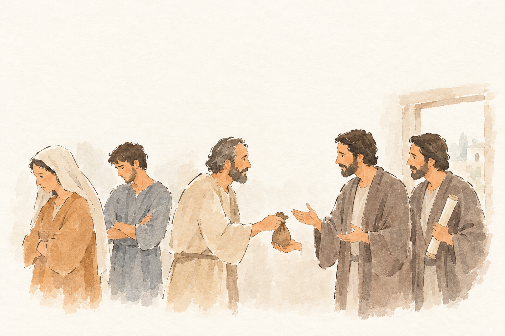
TIT-001-V1__r1v2.png: bestanden, 3 Punkte, Kern 1 Die Geldübergabe und die bedrückte Familie passen teilweise; die verführerische Lehre und das Zum-Schweigen-Bringen der Verführer sind nicht erkennbar.
Blind: The older man holds out a pouch toward a bearded man who responds with open-handed gestures. A second bearded man watches while holding a scroll, while the woman and young man at left stand with folded arms and look down. – Possibly a biblical scene involving an offering or payment, but the image does not provide enough distinctive detail to identify a particular story or moment confidently.

Kachel: bestanden, Kern 1 Das gewinnsüchtige Lehren und das Zum-Schweigen-Bringen der Verführer sind nicht eindeutig dargestellt.
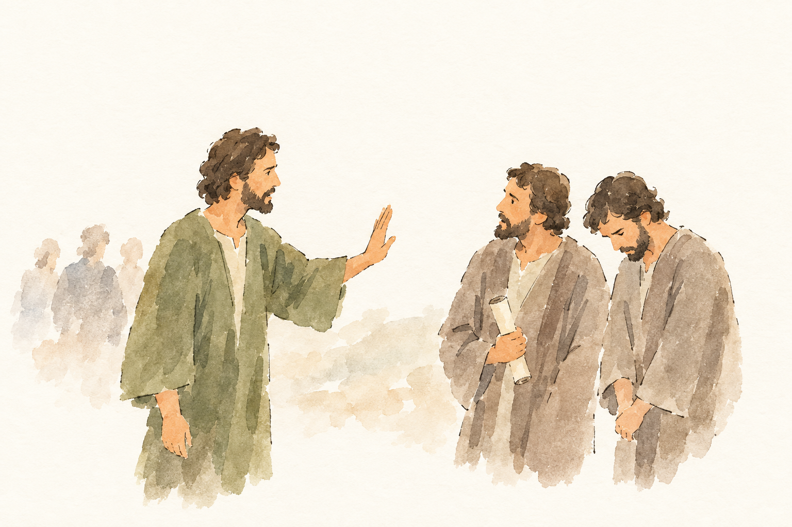
TIT-001-V2__r1v1.png ✔ gewählt: bestanden, 2 Punkte, Kern 1 Paulus und Titus sind nicht erkennbar; das Kreter-Zitat und die Aufforderung zur scharfen Zurechtweisung fehlen.
Blind: The man in green raises a hand toward the two men on the right. One faces him while holding a scroll, and the other bows his head with his hands together. – The scene could depict Jesus speaking to two men, but there is not enough visible evidence to identify a particular Bible story or moment.
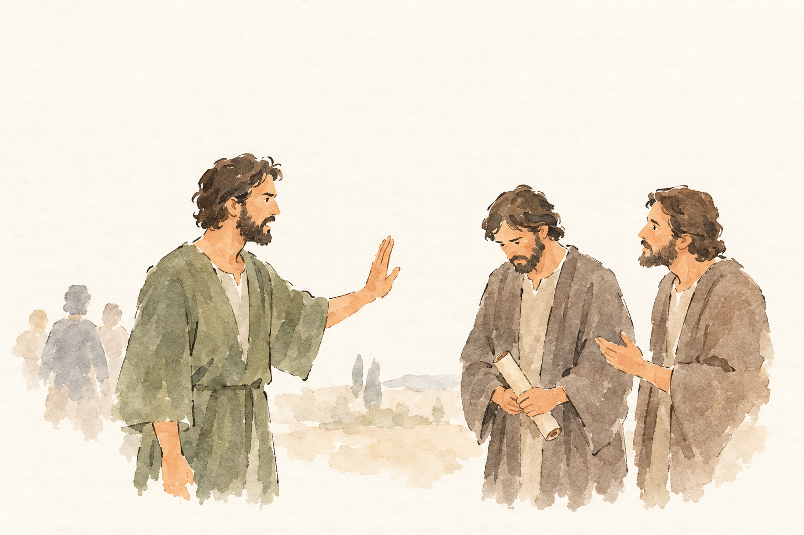
TIT-001-V2__r1v2.png: bestanden, 2 Punkte, Kern 1 Paulus und Titus sind nicht erkennbar; das Prophetenzitat, seine Bestätigung und der Auftrag, die Verführer für einen gesunden Glauben scharf zurechtzuweisen, fehlen.
Blind: The man in green raises a hand toward two men facing him. One of the men looks down at a scroll while the other gestures toward the man in green; three indistinct figures stand in the distance. – Possibly Jesus speaking with the two disciples on the road to Emmaus, but the image lacks enough distinctive details to identify the story or moment securely.

Kachel: bestanden, Kern 1 Paulus’ Anweisung an Titus sowie das Zitat über die Kreter und dessen Bestätigung fehlen; die Personen sind nicht eindeutig zugeordnet.
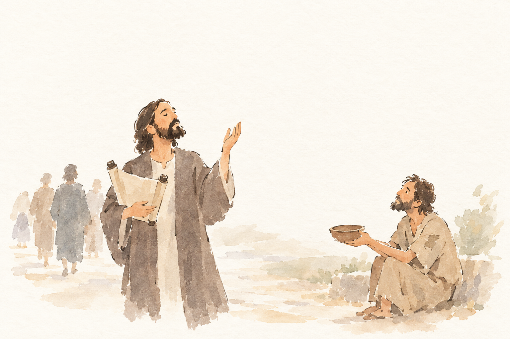
TIT-001-V3__r1v1.png ✔ gewählt: bestanden, 3 Punkte, Kern 1 Die Heuchelei des Mannes und der Gegensatz zwischen Gottesbekenntnis und Werken bleiben unklar; auch die Aussage über Reinheit und Unglauben ist nicht erkennbar.
Blind: A standing man holds a scroll and raises one hand as he looks upward. A seated man extends a bowl and looks toward him, while several distant figures walk along the path. – It may evoke a religious man passing a beggar, but the image does not identify a particular Bible story or moment with confidence.
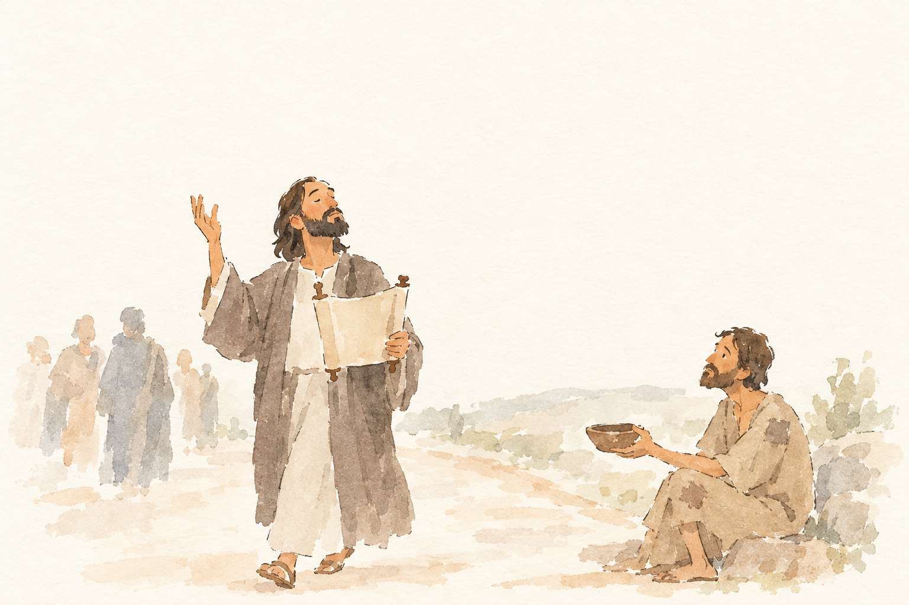
TIT-001-V3__r1v2.png: bestanden, 3 Punkte, Kern 1 Der Widerspruch zwischen dem Bekenntnis zu Gott und den schlechten Taten sowie die Aussage über Reinheit und Unglauben bleiben unklar.
Blind: A robed man walks along a road holding a scroll and raising one hand. A seated man in patched clothing looks up at him and holds out a bowl, while several figures are visible in the distance. – It could depict a religious teacher passing a beggar, but there is not enough visible evidence to identify a particular Bible story or moment.

Kachel: bestanden, Kern 1 Der Gegensatz zwischen Gottesbekenntnis und verweigerter Hilfe sowie die Aussage über Reine und Befleckte bleiben unklar.
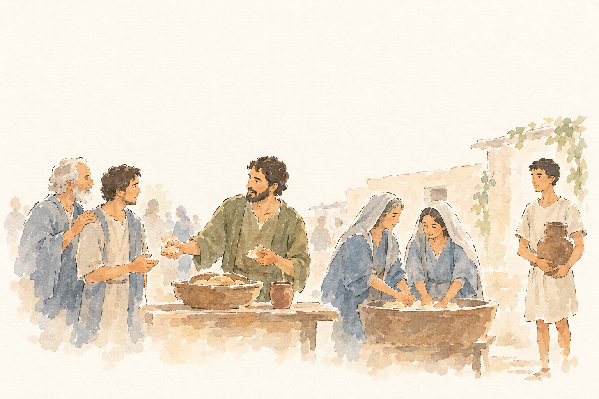
TIT-002-L1__r1v1.png ✔ gewählt: bestanden, 3 Punkte, Kern 1 Verschiedene Altersgruppen und gute Werke sind angedeutet, aber Titus’ Unterweisung der Gruppen und deren beabsichtigte Wirkung werden nicht erkennbar.
Blind: The bearded man offers a piece of bread to a younger man as an older man stands beside him. Two women work with pale material in a large basin, while a young man holds a jar nearby. – Possibly a scene of Jesus sharing bread, perhaps associated with the feeding of the multitude, but no distinctive detail confirms a particular Bible story or moment.
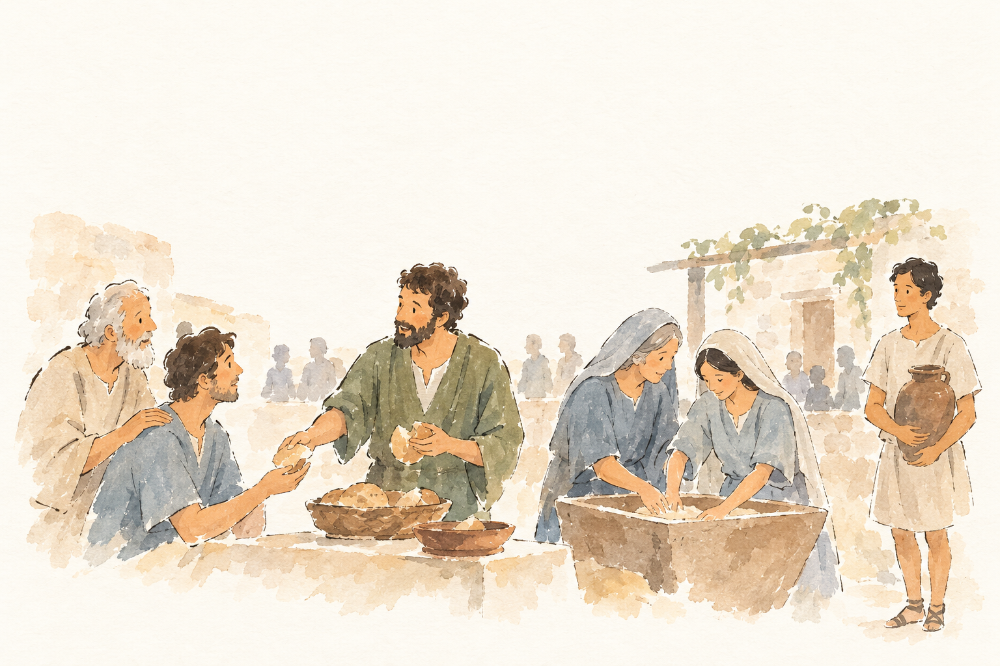
TIT-002-L1__r1v2.png: bestanden, 2 Punkte, Kern 1 Verschiedene Altersgruppen und gute Werke sind erkennbar, aber Titus’ Unterweisung, die Rolle der Sklaven und die genannten Wirkungen bleiben unklar.
Blind: A man in green offers bread to a seated man while an older man watches with a hand on the seated man's shoulder. Nearby, two women work with pale material in a trough, and a boy or young man holds a large jar. – Possibly a biblical scene of sharing food, but no specific story or exact moment can be identified confidently from the visible details.
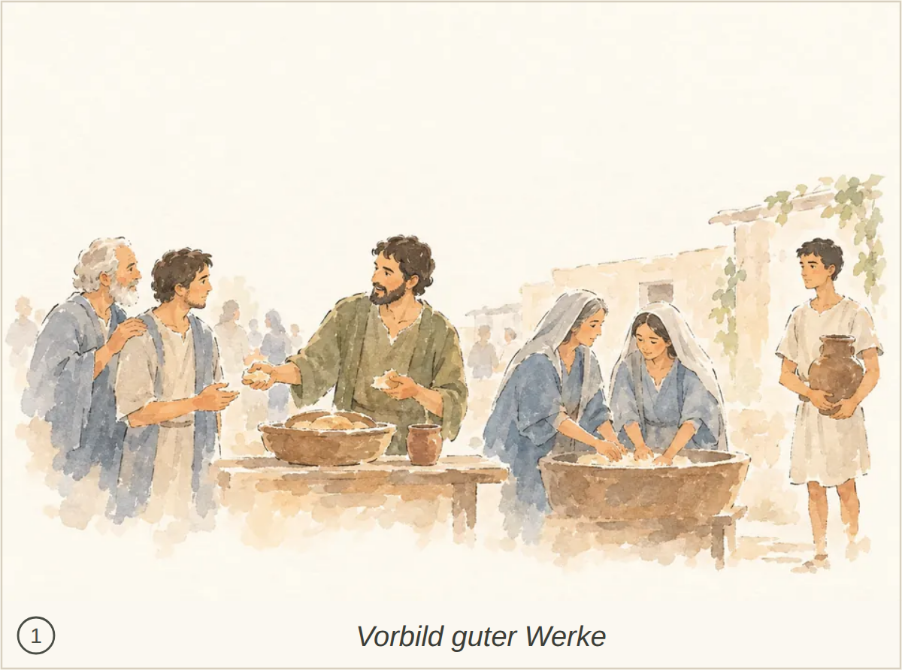
Kachel: bestanden, Kern 1 Titус’ Unterweisung der verschiedenen Gruppen und die genannten Wirkungen der gesunden Lehre sind nicht erkennbar; die Handlung erscheint eher als Essensgabe und gemeinsames Arbeiten.
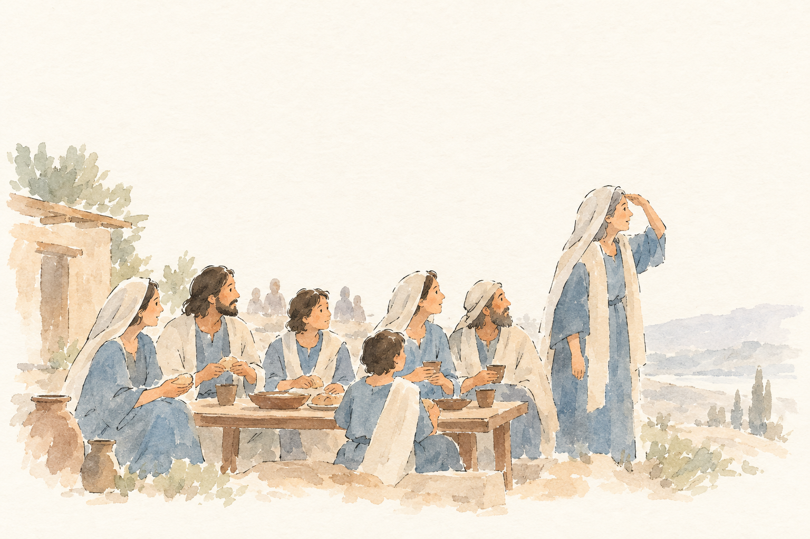
TIT-002-G1__r1v1.png ✔ gewählt: bestanden, 4 Punkte, Kern 1 Das Ausschauhalten passt zur Erwartung, aber Jesu Erscheinen, Gottes rettende Gnade und die Erziehung zu einem gottgefälligen Leben sind nicht erkennbar.
Blind: A group sits around a table with food and cups, several turning to look toward the right. A woman stands beside them, shading her eyes as she looks into the distance. – The clothing and communal meal could suggest a biblical scene, but no particular story or exact moment can be identified confidently from the picture alone.
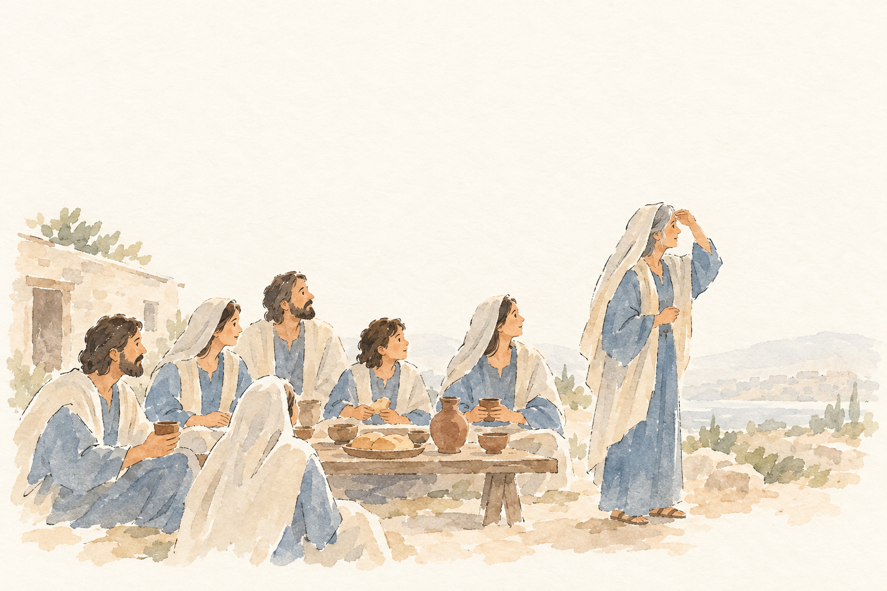
TIT-002-G1__r1v2.png: bestanden, 4 Punkte, Kern 1 Das Warten ist erkennbar, aber Gottes rettende Gnade, ihre erzieherische Wirkung und die erwartete Herrlichkeit Jesu Christi bleiben unklar.
Blind: A group sits around a table with bread and vessels, several looking toward the right. A woman stands beside them, shading her eyes as she looks into the distance. – The image may show people waiting or watching for someone, but there is not enough visible evidence to identify a particular Bible story or moment.
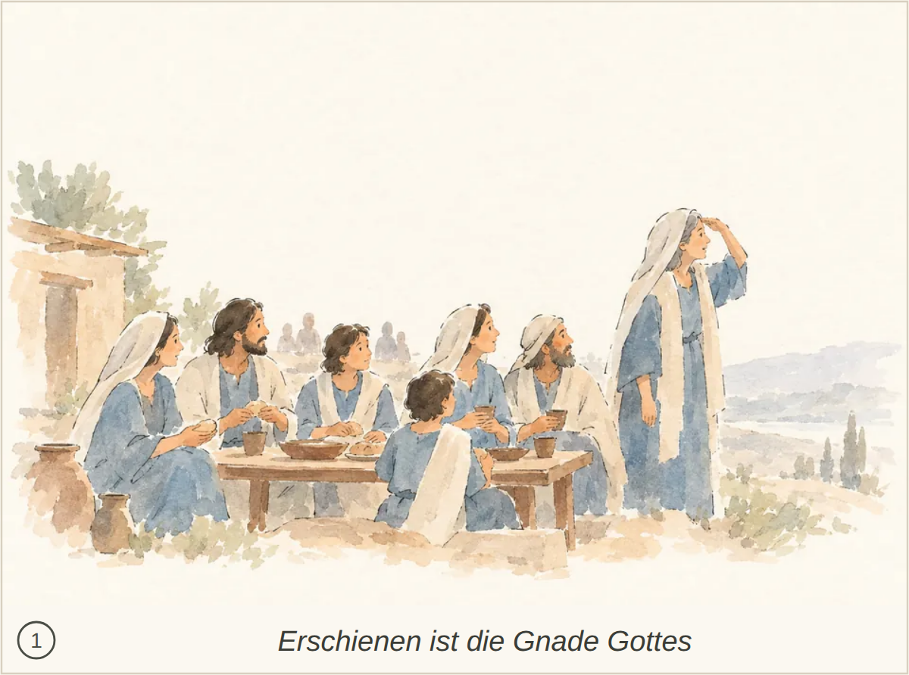
Kachel: bestanden, Kern 1 Das Ausschauhalten deutet Erwartung an, doch der Bezug zur rettenden Gnade Gottes, zum frommen Leben und zum Erscheinen Jesu Christi bleibt unklar.
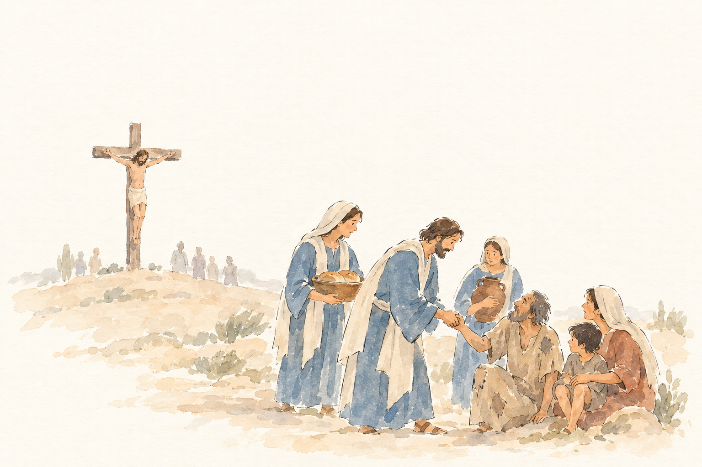
TIT-002-G2__r1v1.png: unklar, 3 Punkte, Kern 1 Kreuzigung und gute Werke sind erkennbar, aber die Loskaufung von Gesetzlosigkeit und die Reinigung eines Volkes für Christus bleiben unklar.
Blind: A standing man bends to clasp the hand of an older seated man, while two women carry bread and a jug nearby. A woman and boy sit beside the older man, and a crucified figure and distant people appear on the hill behind them. – The cross evokes the crucifixion of Jesus, while the foreground act of helping people in need may evoke Matthew 25:35–40. The picture does not clearly identify a single specific story or moment.
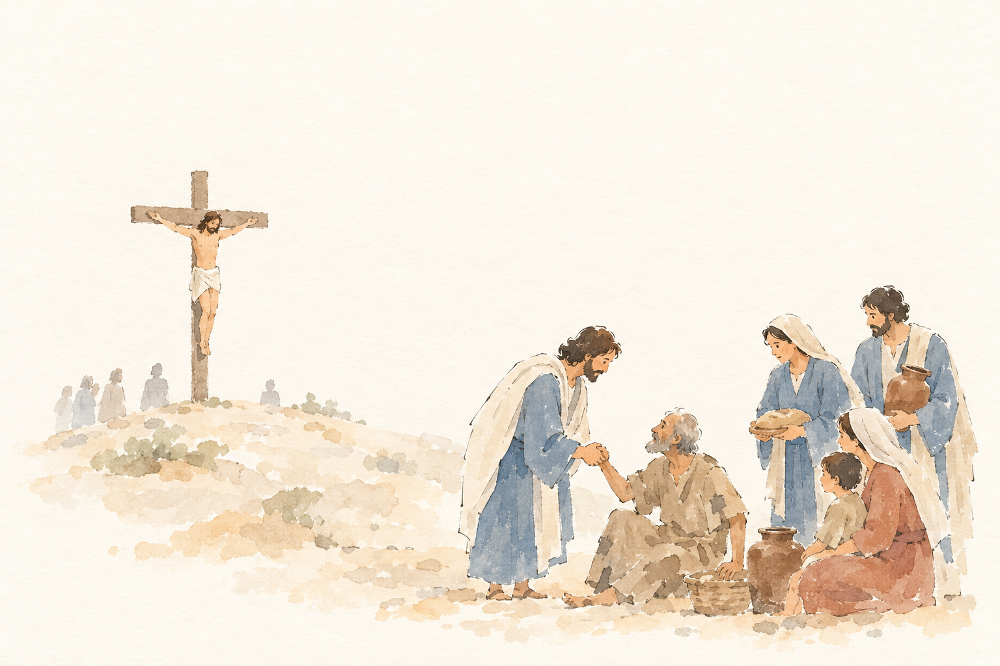
TIT-002-G2__r1v2.png: unklar, 3 Punkte, Kern 1 Kreuzigung und gute Werke sind angedeutet; die Erlösung von Gesetzlosigkeit und die Reinigung eines eigenen Volkes bleiben unklar.
Blind: A robed man bends to clasp the hand of an older man sitting on the ground, while nearby people hold bread and a jug. In the distance, a man hangs on a cross as small figures stand around the hill. – The cross suggests the Crucifixion of Jesus, while the foreground depicts compassion toward a poor or needy man. The combined scene does not clearly identify a single specific biblical episode or moment.
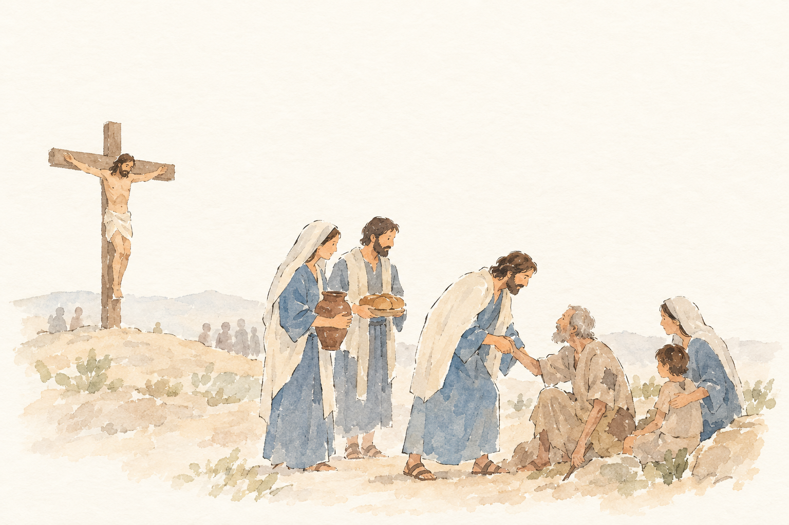
TIT-002-G2__r2v1.png ✔ gewählt: bestanden, 3 Punkte, Kern 1 Jesu Selbsthingabe zur Erlösung von Gesetzlosigkeit und die Reinigung eines Volkes werden nicht eindeutig dargestellt.
Blind: A robed man bends down and clasps the hand of an older man seated on the ground. Two companions carry bread and a jug, while a woman holds a child nearby; in the background, a man hangs on a cross. – The scene may evoke Jesus helping people in need, with the crucifixion shown in the background. It does not clearly identify one exact biblical story or moment.
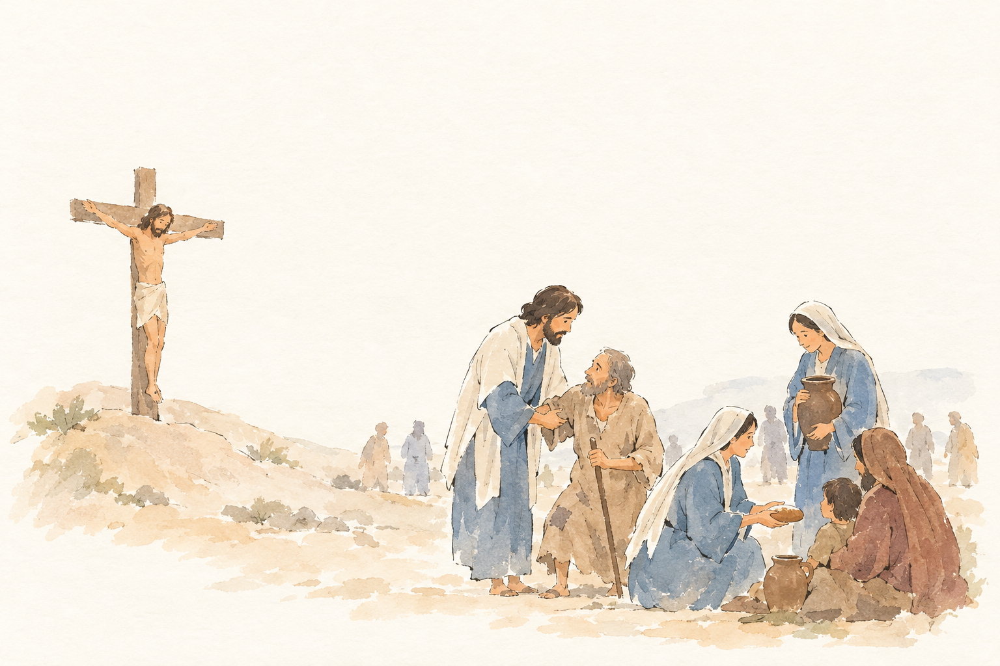
TIT-002-G2__r2v2.png: bestanden, 3 Punkte, Kern 1 Jesu Selbsthingabe und die guten Werke sind angedeutet, aber die Erlösung von Gesetzlosigkeit und die Reinigung seines Volkes bleiben unklar.
Blind: A dark-haired man helps an older man who is leaning on a staff. Nearby, a kneeling woman offers food to a child while another woman holds a jar; in the background, a man hangs on a cross. – The cross suggests the Crucifixion of Jesus, while the foreground appears to show acts of compassion. The combined scene does not clearly identify one exact Bible-story moment.

Kachel: bestanden, Kern 1 Jesu Hingabe am Kreuz und gute Werke sind angedeutet; die Erlösung von Gesetzlosigkeit und die Reinigung seines Volkes bleiben unklar.
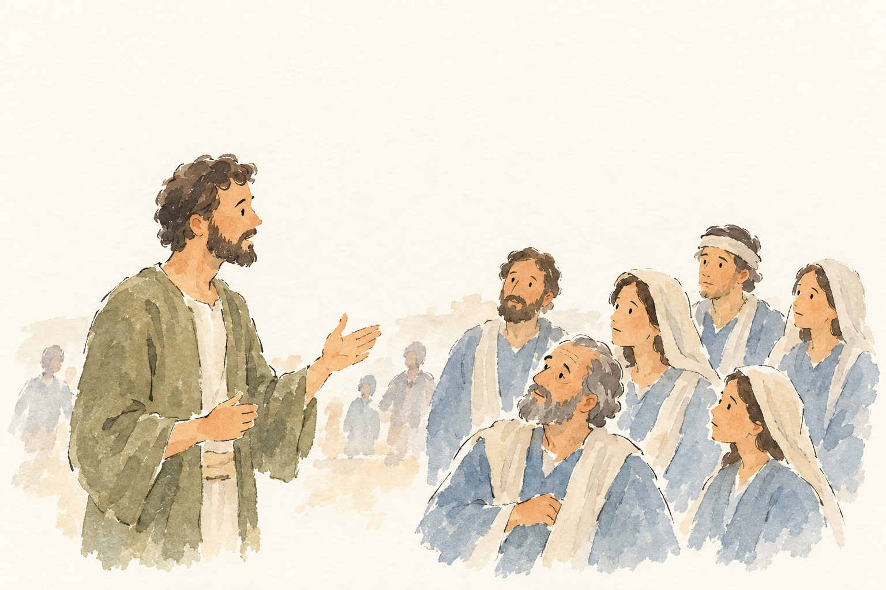
TIT-002-G3__r1v1.png ✔ gewählt: bestanden, 5 Punkte, Kern 1 Der Sprecher ist nicht als Titus erkennbar; Ermahnung und Zurechtweisung mit Vollmacht bleiben unklar.
Blind: A bearded man gestures toward a group as if speaking to them. The group looks toward him, while faint figures stand in the background. – It may depict Jesus teaching a group of followers, but no visible detail identifies a particular Bible story or moment.
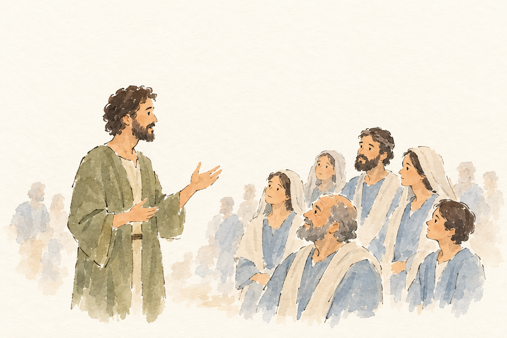
TIT-002-G3__r1v2.png: bestanden, 4 Punkte, Kern 1 Der Sprecher ist nicht als Titus erkennbar; Ermahnung und Zurechtweisung mit Vollmacht bleiben unklar.
Blind: The man in green gestures as he addresses the group. Several people face him and appear to listen. – Possibly Jesus teaching a crowd, but no particular Bible story or exact moment is identifiable from the picture alone.

Kachel: bestanden, Kern 1 Titus ist nicht eindeutig erkennbar; die Ermahnung und Zurechtweisung mit Vollmacht sowie die Aufforderung, ihn nicht geringzuschätzen, bleiben unklar.
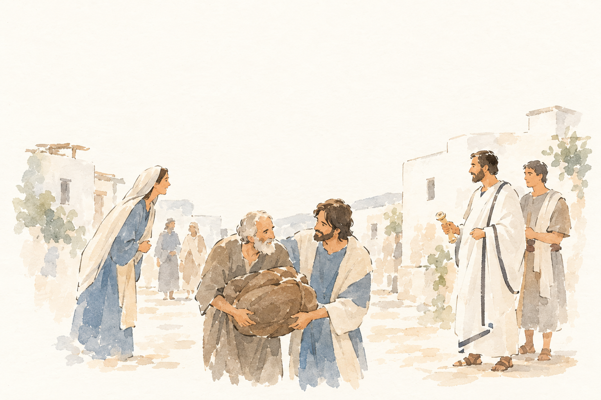
TIT-003-C1__r1v1.png: durchgefallen, 4 Punkte, Kern 1 Die Hilfe für den alten Mann passt zu guten Werken und Sanftmut. Titus’ Ermahnung zu Gehorsam gegenüber Behörden und friedlichem Verhalten ist jedoch nicht erkennbar.
Blind: An older man and a younger bearded man hold a large brown bundle together and look at one another. A woman and two men stand nearby, while two smaller figures appear in the background. – The bearded man in blue and cream may be intended as Jesus helping someone, but the visible details do not securely identify a particular Bible story or moment.
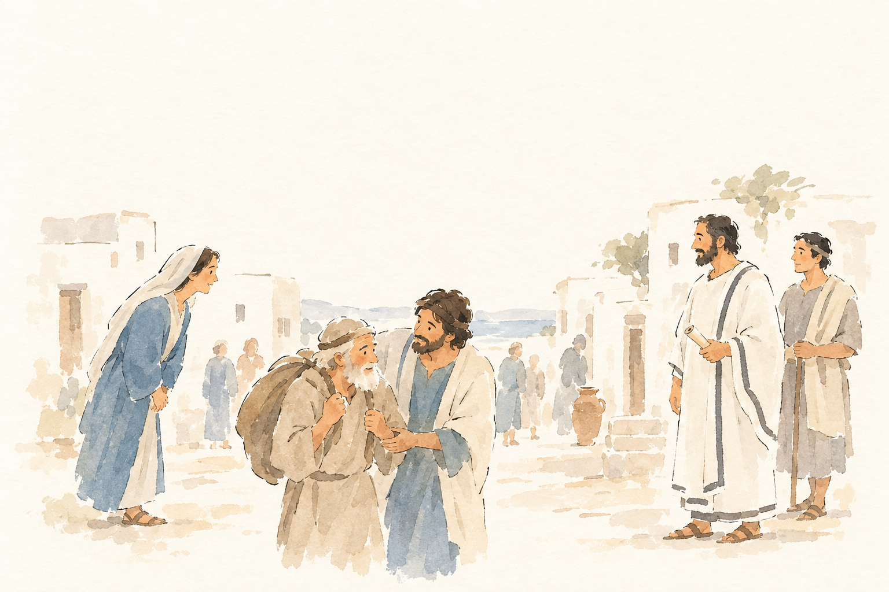
TIT-003-C1__r1v2.png: durchgefallen, 3 Punkte, Kern 1 Eine freundliche Hilfeleistung ist erkennbar; Titus’ Aufforderung zu Gehorsam, Friedfertigkeit und Sanftmut gegenüber allen wird jedoch nicht deutlich.
Blind: A younger man leans toward an elderly man carrying a heavy sack and appears to offer him help or reassurance. A woman watches nearby, while two men stand to the right and faint figures move in the background. – The clothing and figures could suggest a Bible illustration, perhaps involving an act of compassion, but there is not enough visible evidence to identify a particular story or moment reliably.
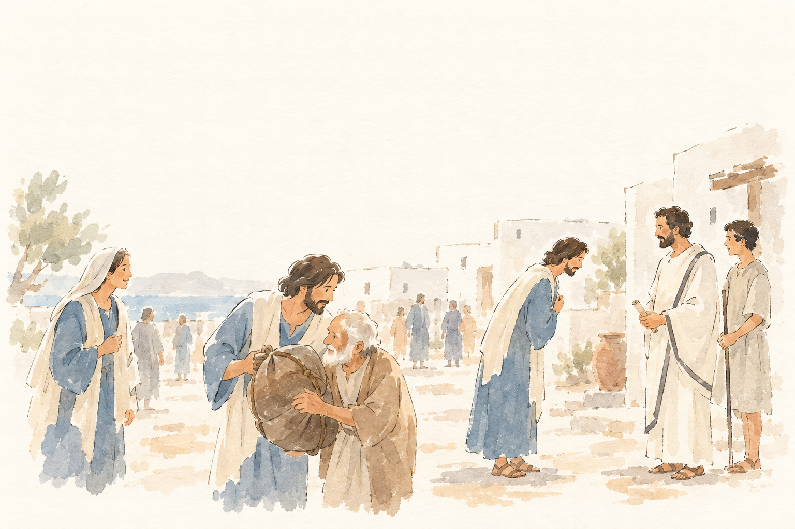
TIT-003-C1__r2v1.png ✔ gewählt: bestanden, 4 Punkte, Kern 1 Hilfsbereitschaft und möglicherweise Unterordnung sind dargestellt; Titus’ Ermahnung sowie Sanftmut und Friedfertigkeit gegenüber allen bleiben unklar.
Blind: In the foreground, a man helps an elderly man hold a large brown bundle while a woman watches nearby. Farther right, another man bows toward a man in white, beside whom a young person stands with a staff. – The image suggests a biblical-era scene, but there is not enough visible evidence to identify a particular Bible story or moment confidently.
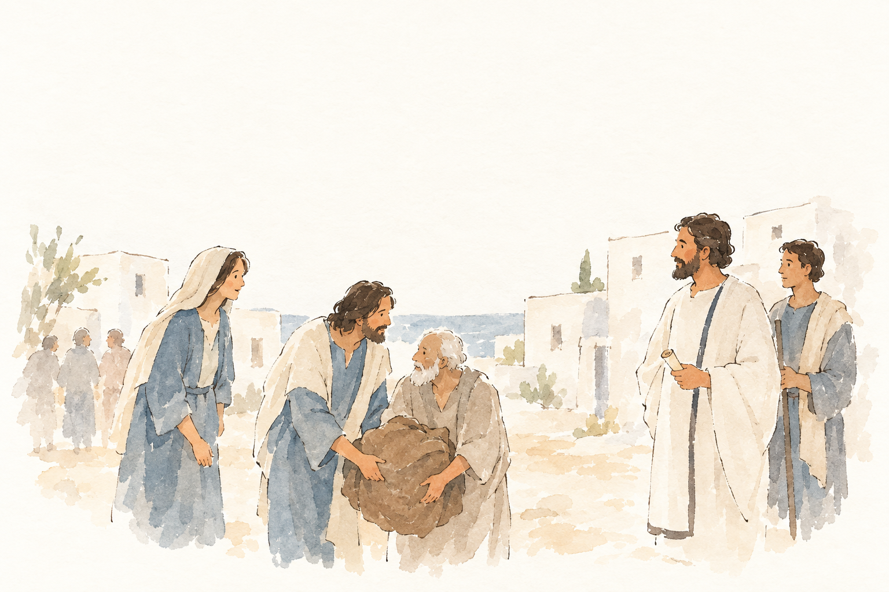
TIT-003-C1__r2v2.png: durchgefallen, 3 Punkte, Kern 0 Titus’ Ermahnung zu Gehorsam gegenüber Behörden, guten Werken und Sanftmut gegenüber allen ist nicht erkennbar.
Blind: Two men bend over and hold a large brown object together while a woman watches nearby. Two other men stand to the right, facing toward the group. – No specific Bible story or moment can be identified confidently from the visible details.

Kachel: bestanden, Kern 1 Hilfsbereitschaft und Unterordnung werden angedeutet; Titus’ Ermahnung sowie Friedfertigkeit und Sanftmut gegenüber allen bleiben unklar.
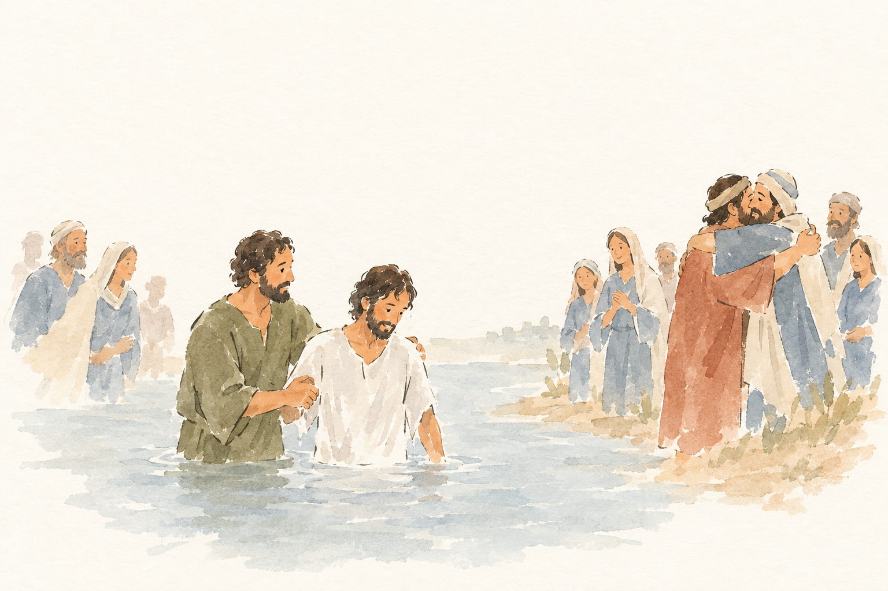
TIT-003-C2__r1v1.png ✔ gewählt: bestanden, 5 Punkte, Kern 1 Das Bad und die Umarmung passen zu Erneuerung und Versöhnung; Gottes Erbarmen und die Rettung zur Hoffnung auf ewiges Leben bleiben jedoch unklar. Die Taufe Jesu ist nicht eindeutig erkennbar.
Blind: Two men stand in the water, with the man in green supporting the white-robed man. On the bank to the right, two other men embrace while several people watch nearby. – Possibly the baptism of Jesus by John the Baptist, at the moment they stand together in the water. The identification is uncertain, and the separate embrace on the bank is not clearly explained by the image.
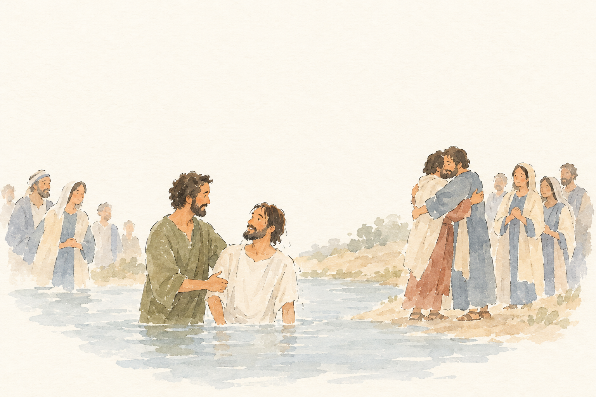
TIT-003-C2__r1v2.png: bestanden, 5 Punkte, Kern 1 Die Szene im Wasser und die Umarmung passen zum Motiv der Erneuerung und Versöhnung. Gottes Rettung aus Erbarmen und die Wiedergeburt durch den Heiligen Geist sind jedoch nicht eindeutig erkennbar; die Identifikation als Jesu Taufe bleibt unsicher.
Blind: Two men stand together in the water, one resting a hand on the other's arm as they look at each other. On the right bank, two people embrace while others stand nearby. – Possibly the baptism of Jesus by John the Baptist, showing the two men together in the water. No pouring of water or other decisive baptism detail is visible, so the identification and exact moment are uncertain.
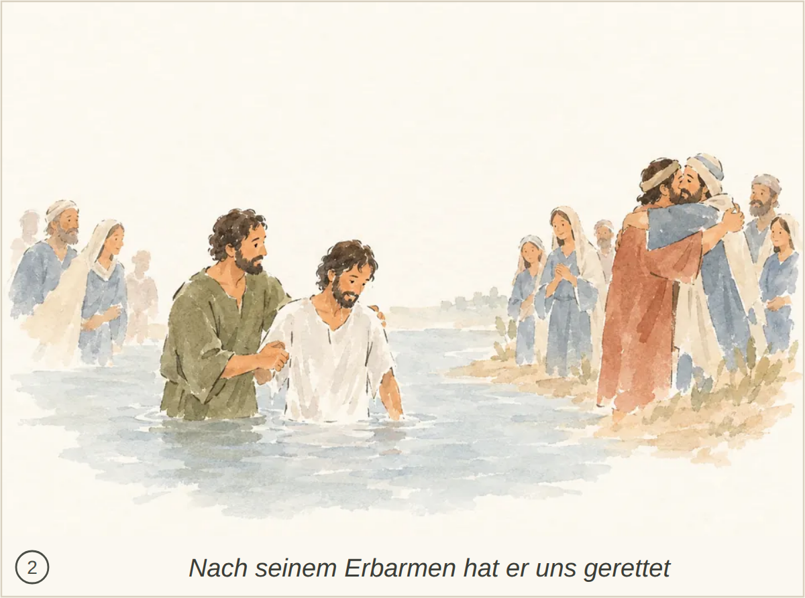
Kachel: bestanden, Kern 1 Taufe und Versöhnung sind erkennbar, aber Gottes Erbarmen, die Wiedergeburt durch den heiligen Geist und die Hoffnung auf ewiges Leben bleiben unklar.
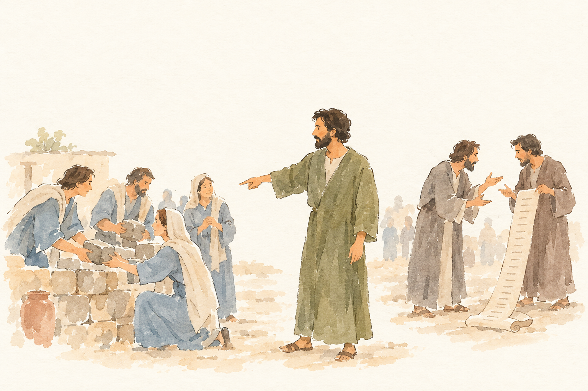
TIT-003-W1__r1v1.png ✔ gewählt: bestanden, 4 Punkte, Kern 1 Die Gegenüberstellung von Arbeit und Streit ist erkennbar, aber Titus’ Ermahnung zu guten Werken und zum Meiden nutzloser Gesetzesstreitigkeiten bleibt unklar.
Blind: People on the left handle stones around a partly built wall while a man in green points toward them. On the right, two men gesture to each other, one holding a long scroll; faint figures stand behind them. – Possibly Nehemiah directing the rebuilding of Jerusalem's wall while others discuss or oppose the work. The particular story and moment cannot be established from the picture alone.
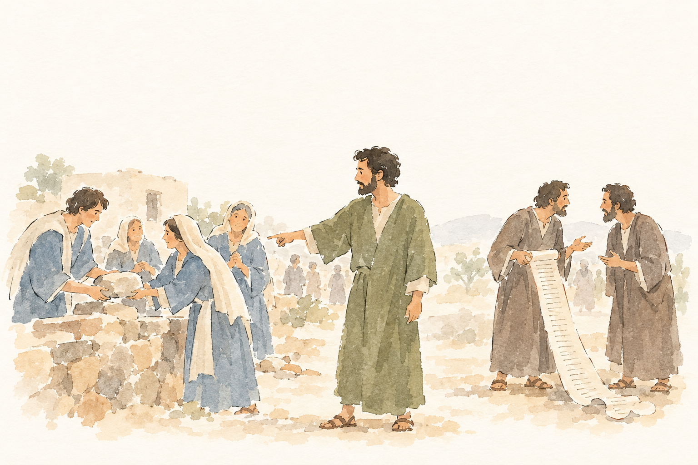
TIT-003-W1__r1v2.png: bestanden, 4 Punkte, Kern 1 Titus’ Aufforderung zu guten Werken und seine Ablehnung nutzloser Streitfragen werden nicht erkannt; der vermutete Mauerbau unter Nehemia ist nicht die beabsichtigte Szene.
Blind: At the left, two people handle a stone beside a low wall while others stand nearby. A man in green points toward them, and two men at the right face each other and gesture beside a long scroll. – Possibly Nehemiah directing the rebuilding of Jerusalem's wall, with others discussing the work. The image does not contain enough identifying detail to establish the story or an exact moment confidently.
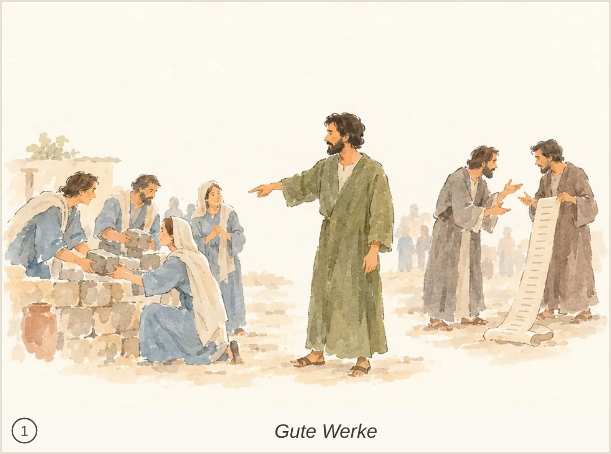
Kachel: bestanden, Kern 1 Titus und seine Aufforderung zu guten Werken werden nicht sicher erkannt; auch das Meiden nutzloser Streitfragen und Gesetzesdebatten bleibt unklar.
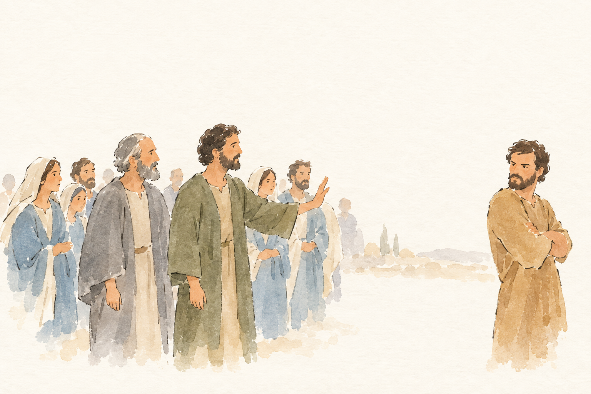
TIT-003-W2__r1v1.png: durchgefallen, 4 Punkte, Kern 1 Die Abweisung nach zwei Ermahnungen und der Grund der Spaltung sind nicht eindeutig erkennbar.
Blind: A green-robed man extends an open hand toward a man standing apart with his arms crossed. Several people stand behind the green-robed man and watch the separated figure, who looks back at them. – Possibly Jesus and the rich young man, at the moment the man turns away after Jesus tells him to give up his possessions. This is uncertain: no visible detail conclusively identifies the story.
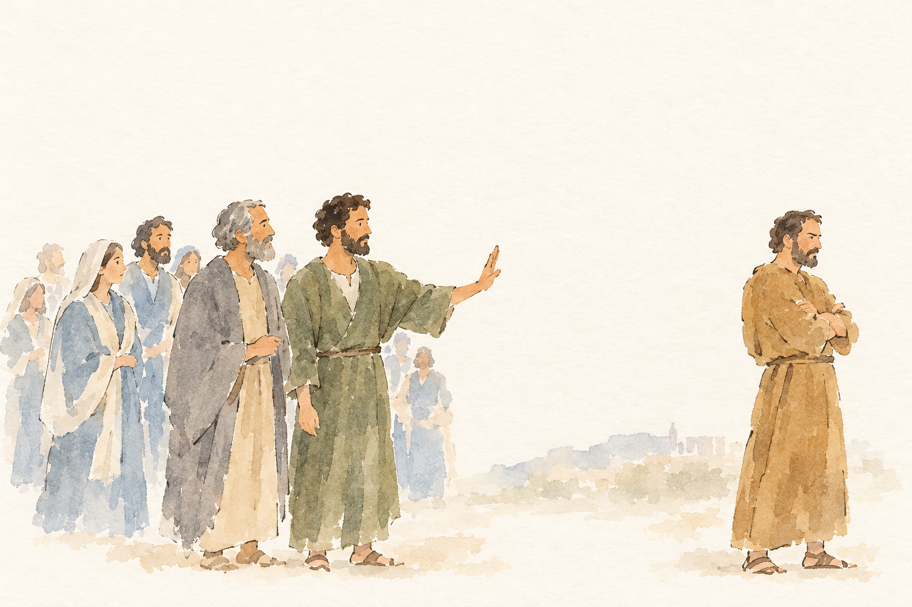
TIT-003-W2__r1v2.png ✔ gewählt: bestanden, 5 Punkte, Kern 1 Die Geste passt zu einer Abweisung, doch der Anlass der Spaltung und die zwei vorausgehenden Ermahnungen sind nicht erkennbar.
Blind: A man in green extends an open hand toward a man standing apart to the right. The latter faces away with his arms folded, while a group watches from behind the man in green. – Possibly the rich young man turning away from Jesus after being told to give up his possessions, though the picture has no identifying detail that confirms this.
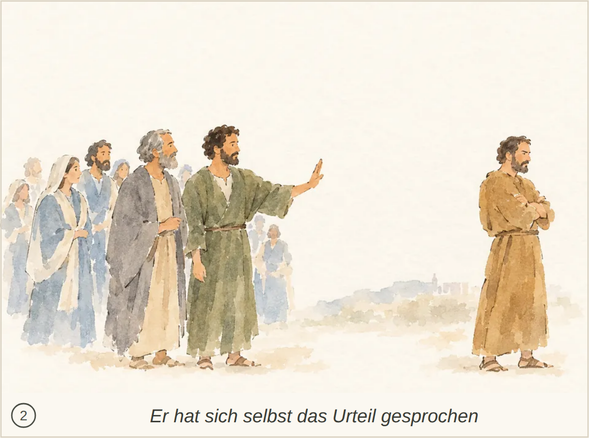
Kachel: bestanden, Kern 1 Die Abweisung ist nur angedeutet; Titus, die vorausgegangenen Ermahnungen und der Grund der Abweisung sind nicht erkennbar.
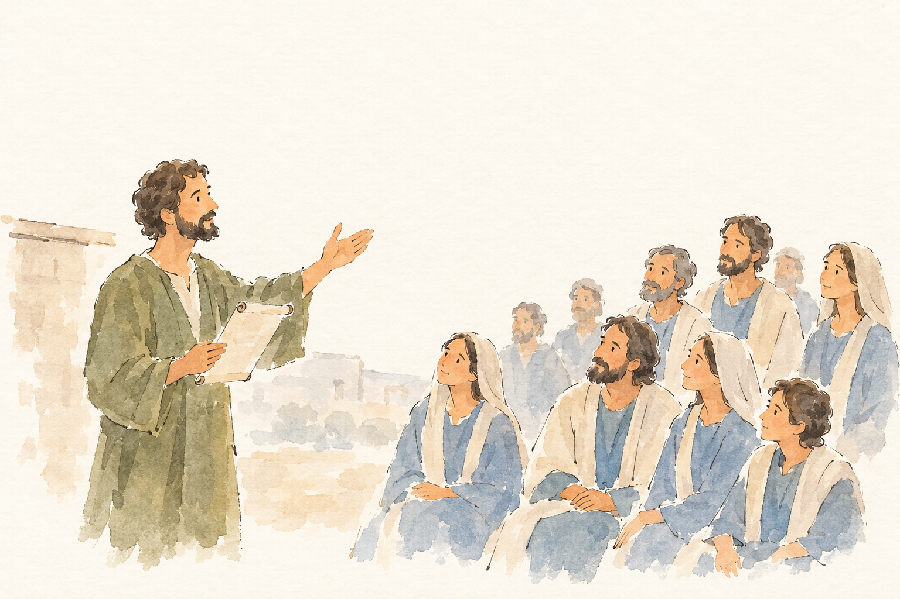
TIT-003-R1__r1v1.png: unklar, 4 Punkte, Kern 1 Die konkreten Reiseaufträge an Titus sowie gute Werke, Grüße und Segenswunsch sind nicht erkennbar; die Personen lassen sich nicht sicher zuordnen.
Blind: A standing man holds a scroll and gestures toward a group. The people sit or stand facing him as if listening. – The scene could depict a biblical teacher addressing a crowd with a scroll, but there is not enough visible evidence to identify a particular story or moment.
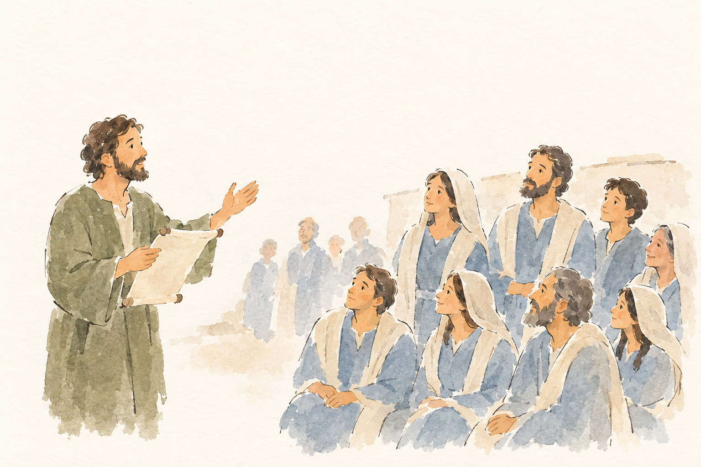
TIT-003-R1__r1v2.png: unklar, 4 Punkte, Kern 1 Die Anweisungen an Titus, die Reisevorbereitungen für Zenas und Apollos sowie gute Werke, Grüße und der Gnadensegen sind nicht erkennbar.
Blind: A man holds an open scroll and gestures as if addressing the people gathered around him. Several listeners sit or stand facing him. – Possibly Ezra reading the Law to the gathered people in Nehemiah 8, but nothing visible identifies the story or an exact moment with certainty.
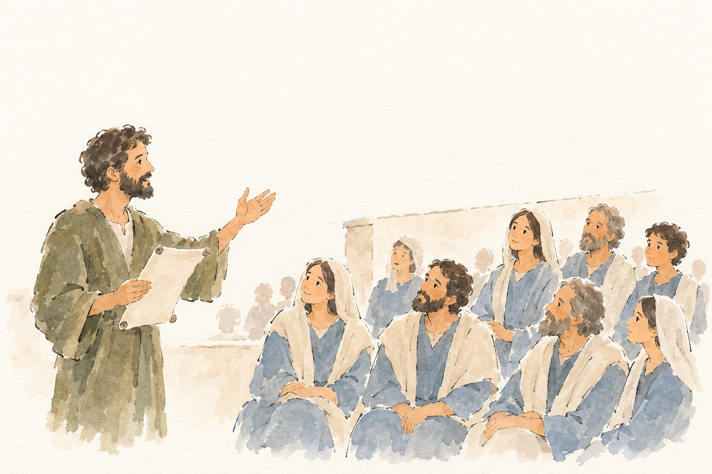
TIT-003-R1__r2v1.png: unklar, 4 Punkte, Kern 1 Die konkrete Botschaft an Titus über die Reisen, gute Werke sowie Grüße und Segen ist nicht erkennbar; die Identität des Vorlesenden bleibt unklar.
Blind: A standing man holds a scroll and gestures toward a group. Several seated and standing people watch him. – The scene could suggest Jesus reading or teaching from a scroll in a synagogue, possibly the reading in Nazareth, but no visible detail establishes a particular Bible story or moment.
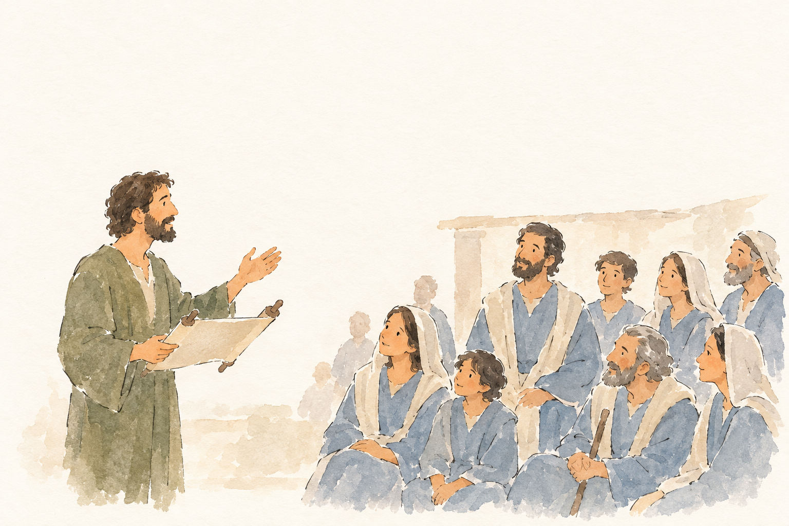
TIT-003-R1__r2v2.png: unklar, 5 Punkte, Kern 1 Die Reiseanweisungen an Titus sowie für Zenas und Apollos, der Aufruf zu guten Werken und der abschließende Gruß mit Segen sind nicht erkennbar.
Blind: A standing man holds an open scroll and gestures toward a group. The people are seated or standing around him, appearing to listen. – It could depict a biblical figure reading or teaching from a scroll, possibly Ezra reading the Law, but the picture does not establish a particular story or moment.
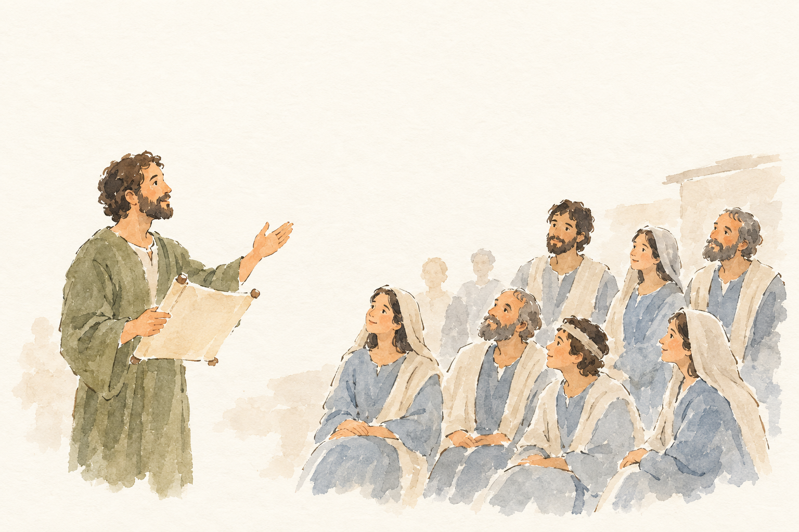
TIT-003-R1__r3v1.png: unklar, 4 Punkte, Kern 1 Die Verlesung vor einer Gemeinde passt, doch Titus, Paulus und die Reiseaufträge sowie gute Werke, Grüße und Segen sind nicht erkennbar.
Blind: A standing man holds an open scroll and gestures toward a group. The seated and standing listeners look in his direction. – Possibly Jesus reading or teaching from scripture, but the picture does not identify a particular Bible story or exact moment.
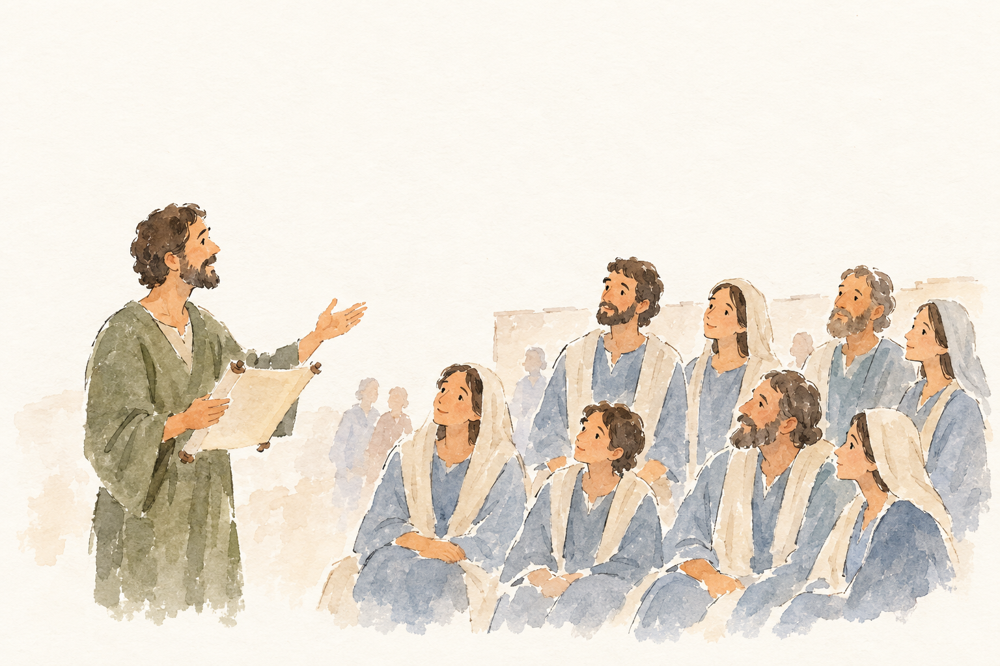
TIT-003-R1__r3v2.png: unklar, 4 Punkte, Kern 1 Die Leseszene passt grundsätzlich, aber Titus und Paulus sind nicht erkennbar; die Reiseaufträge, guten Werke und der abschließende Segensgruß fehlen.
Blind: A standing man holds an open scroll and gestures toward a group. The seated and standing listeners look toward him as though listening to him speak or read. – Possibly Ezra reading the law to the gathered people, as in Nehemiah 8, but the picture has no clear identifying detail to establish that story or moment.
TIT-003-R2__r1v1.png: unklar, 4 Punkte, Kern 1 Die Übergabe von Brot passt zur Reiseversorgung, aber Titus, Zenas und Apollos sowie der Zweck der Reise und die Aufforderung zu guten Werken bleiben unerkannt.
Blind: Two men face one another and hold out their hands around a loaf of bread. A woman carrying a basket of bread and two other men stand nearby, while small figures appear in a boat and along the shore. – Possibly the feeding of the five thousand, at the moment bread is being brought to Jesus. The image does not contain enough distinctive details to identify the story or moment confidently.
TIT-003-R2__r1v2.png: durchgefallen, 4 Punkte, Kern 1 Die Versorgung mit Brot ist zu sehen, aber Titus, Zenas und Apollos sowie der Reiseanlass sind nicht erkennbar. Auch der Bezug zu guten Werken bleibt offen.
Blind: The man in green offers a loaf to the man in blue, while another man watches. A woman holds a basket of bread nearby, accompanied by a man carrying a flask or pouch. – Possibly the feeding of the five thousand, at the moment bread is being brought to Jesus before it is distributed. The image alone does not establish the story or the precise moment, and no fish are clearly visible.
TIT-003-R2__r2v1.png: durchgefallen, 5 Punkte, Kern 1 Die Übergabe von Brot passt zur Versorgung, aber Titus, Zenas und Apollos sowie der Reiseanlass und die Aufforderung zu guten Werken bleiben unerkannt.
Blind: The green-robed man and the brown-robed man hold a loaf between them as they face one another. A woman carrying a basket and two other men with belongings stand nearby. – Possibly a scene of Jesus and disciples by the Sea of Galilee, but the image does not identify a particular Bible story or exact moment with confidence.
TIT-003-R2__r2v2.png: unklar, 5 Punkte, Kern 1 Die Übergabe von Vorräten passt, doch Reise und Identität von Titus, Zenas und Apollos bleiben unklar; auch die Aufforderung zu guten Werken fehlt.
Blind: A group stands together by the water, carrying food and other supplies. The man in green holds out bread and bags toward the man in blue, while the others watch or hold objects. – Possibly the feeding of the five thousand, at the gathering or distribution of bread. The exact story and moment cannot be established from the visible details.
TIT-003-R2__r3v1.png: durchgefallen, 4 Punkte, Kern 1 Die Versorgung ist erkennbar, aber Titus, Zenas und Apollos sowie der Reiseanlass und die Aufforderung zu guten Werken bleiben unklar.
Blind: A man in green offers a loaf and a bundle to a man in blue, who reaches out toward him. Another man watches while two women carry a basket of bread and a jug. – It may depict a biblical scene involving Jesus and the sharing of bread, but the visible details do not identify a particular story or moment with confidence.
TIT-003-R2__r3v2.png: durchgefallen, 4 Punkte, Kern 1 Die Reisevorbereitung passt, aber Titus, Zenas und Apollos sowie der Auftrag zu guten Werken werden nicht eindeutig erkannt.
Blind: On a shore, two men face one another with a loaf of bread between their hands. A third man reaches toward a travel bag, while a woman and another man stand nearby carrying a basket of bread and a jug. – Possibly Jesus and his followers preparing to feed a crowd, but the precise Bible story and moment cannot be identified confidently from the picture alone.